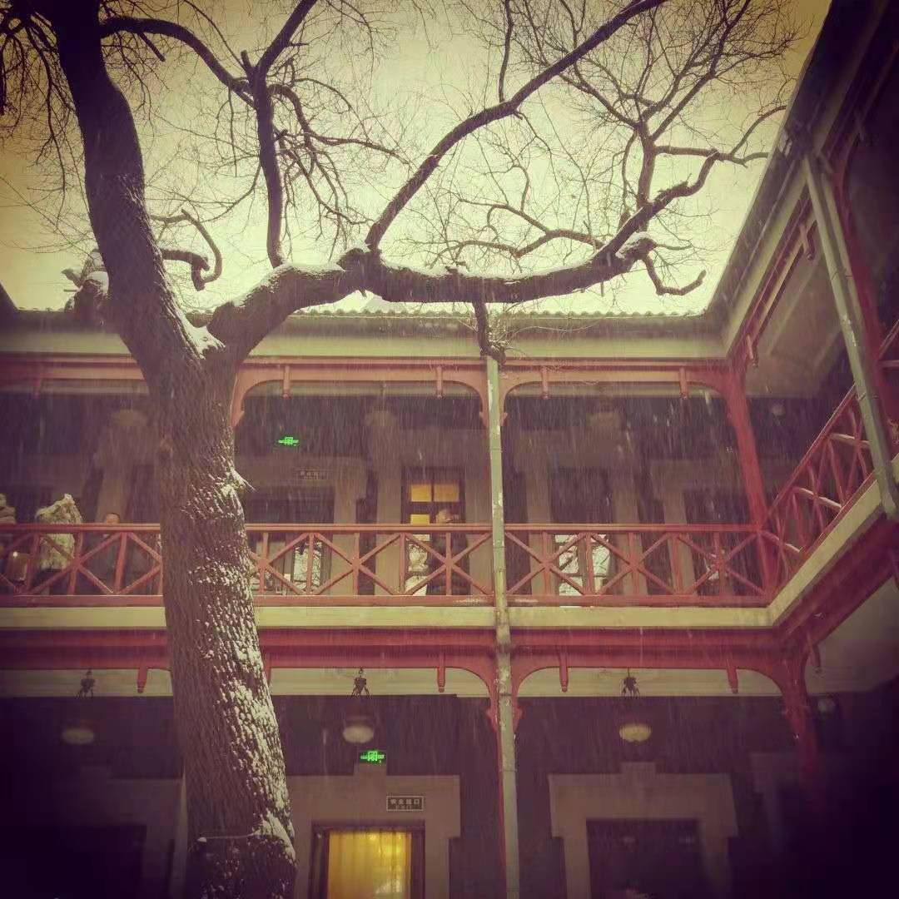
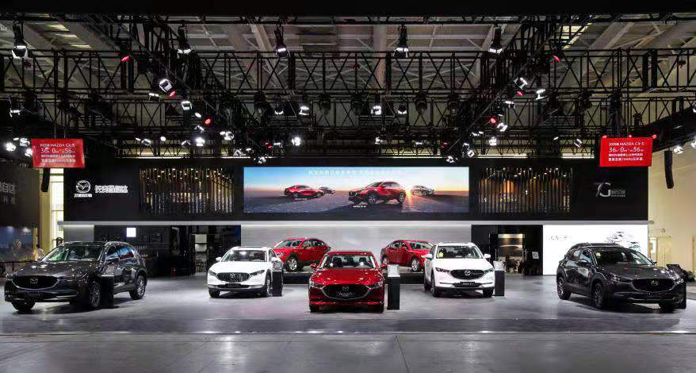
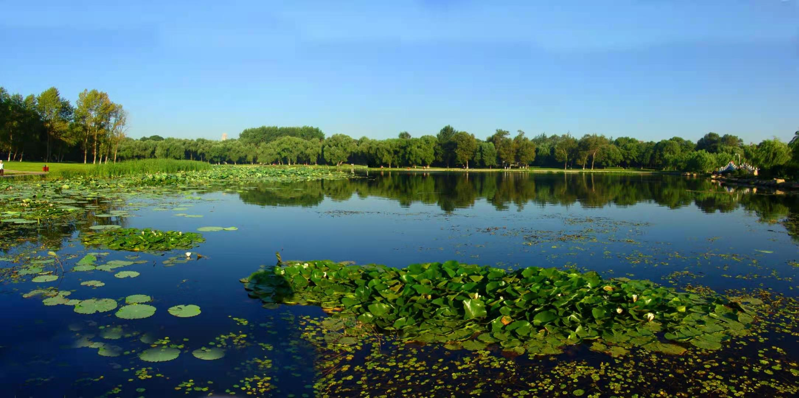
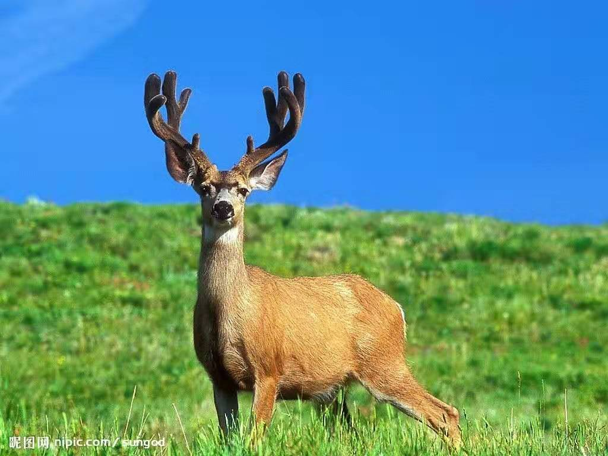

家乡文化

我的老家在吉林长春，而在长春最为著名的就是伪满皇宫了，它位于长春市区东北隅，曾是清朝末代皇帝爱新觉罗·溥仪充当伪满洲国傀儡皇帝时的宫殿，他从1932年到1945年间曾在这里居住。如今这里还原了溥仪曾经生活和工作的环境，展示着大量的史料和文物，让人们了解末代皇帝的前半生以及侵华日军的罪证，如果有对我家乡感兴趣的建议来这观光喔。

与此同时，长春也是汽车之城，在这里，诞生了新中国的第一辆汽车，自然这也成为了新中国第一个汽车制造厂的所在地。长春素有“中国汽车工业的摇篮”、“东方底特律”的美誉，在这座城市里，寄托了老一辈汽车人对于中国汽车工业太多的期望。

最后，位于长春市内南湖风雨四亭也是不容错过的美景，总面积222万多平方米，是市内最大的公园，为全国第二大园，仅次于颐和园。且花园特色鲜明。南湖公园位于市区西南部，湖面92公顷，是长春最大的公园，建于1933年。公园内湖水清澈，岸柳垂青，花香鸟语，四季分明，曲桥亭榭，胜似江南。是长春的城市标志。
家乡特产

长春的双阳区有“梅花鹿之乡”的美称，双阳区养鹿有300年的历史，鹿产品的资源占全国的八分之一，鹿茸产品在全国也是绝对上品，其茸粗壮，毛细地红，茸质松嫩，含血量高，有效成分高，有机质含量高，所以双阳的鹿产品也是长春的绝对的特产。